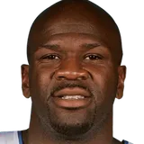

His best final NBA finish was #14 of 30, with the 2009-10 Milwaukee Bucks. In his 376 games for 4 teams over 7 seasons they went 160–216 (42.6%), −56 games under .500, with an average final finish of 20.3.
Jump to: Record by opponent · Season by season · Teammate help
Compare Charlie Bell with…
Suggested, same era and similar teammate help:

Final NBA finish, season by season
Title Finals Other playoffs Missed playoffs. #1 = champion; the dashed line is last place that season. Each point opens that season's final standings.
All 30 teams ranked in 2009-10, his best finish (#14)Teammate help
 Andrew Bogut2.22 seasons
Andrew Bogut2.22 seasons Brandon Jennings0.21 season
Brandon Jennings0.21 season
Seasons with help 0.0 to 0.5 (6): best finish #16 of 30, 2005-06, worst #28 of 30, 2006-07.
Career
Career records (W–L, W − L, with and without) include 2026-27 games through Nov. 25, 2026; season counts and finishes are through 2025-26. Each card opens its board in the same scope. How we count.

Latest completed seasons
Season by season
Newest first; every header sorts. Final NBA finish is the team's rank among all teams that season (#1 = champion) and opens that season's standings. "Without him" uses the team-season window; the span line counts only the games between his first and last game for the team.
| 2010-11 | #20 of 30 | 36–46 43.9% | Missed playoffs | 19 of 82 | 7–12 36.8% | 29–34 46.0%span: 19–18, gap −14.5 | −9.2 | |
| 2009-10 | #14 of 30 | 46–36 56.1% | Lost 1st round 3–4 | 71 of 82 | 37–34 52.1% | 9–2 81.8%span: 9–2, gap −29.7 | −29.7 | |
| 2008-09 | #20 of 30 | 34–48 41.5% | Missed playoffs | 70 of 82 | 29–41 41.4% | 5–7 41.7%span: 5–7, gap −0.2 | −0.2 | |
| 2007-08 | #24 of 30 | 26–56 31.7% | Missed playoffs | 68 of 82 | 24–44 35.3% | 2–12 14.3%span: N/A, gap N/A | +21.0 | |
| 2006-07 | #28 of 30 | 28–54 34.1% | Missed playoffs | 82 of 82 | 28–54 34.1% | N/A | N/A | |
| 2005-06 | #16 of 30 | 40–42 48.8% | Lost 1st round 1–4 | 59 of 82 | 31–28 52.5% | 9–14 39.1%span: 9–14, gap +13.4 | +13.4 | |
| 2001-02 | #20 of 29 | 36–46 43.9% | Missed playoffs | 5 of 82 | 2–3 40.0% | 16–15 51.6%span: N/A, gap N/A | −11.6 | |
| 2001-02 | #6 of 29 | 57–25 69.5% | Lost conf semis 1–4 | 2 of 82 | 2–0 100.0% | 51–24 68.0%span: 6–1, gap +14.3 | +32.0 |
On/off, starts and close games
From the lineup data, 1996-97 on. On/off is net points per 100 possessions with him on the floor minus off, a different unit from the win-rate gaps. Started and off the bench are team records in those games; close games are those within 5 points in the last 5 minutes with him on the floor.
| 2010-11 | +10.3 | N/A | 7–12 36.8% | 1–1 50.0% | |
| 2009-10 | +0.7 | 21–18 53.8% | 16–16 50.0% | 13–15 46.4% | |
| 2008-09 | −5.0 | 7–16 30.4% | 22–25 46.8% | 11–21 34.4% | |
| 2007-08 | −0.9 | 2–3 40.0% | 22–41 34.9% | 14–22 38.9% | |
| 2006-07 | −2.2 | 21–43 32.8% | 7–11 38.9% | 15–27 35.7% | |
| 2005-06 | +1.2 | 2–4 33.3% | 29–24 54.7% | 13–15 46.4% | |
| 2001-02 | −20.0 | N/A | 2–3 40.0% | N/A | |
| 2001-02 | −317.9 | N/A | 2–0 100.0% | N/A |
Teammate help by season
Help this season = Teammates Score points for honors won that season by teammates who shared a game with him, with every teammate that adds to it. Only honors won in that same season count. How help works.
- 2010-11
 Golden StateHelp this season: 0, no honored teammate
Golden StateHelp this season: 0, no honored teammate - 2009-10
 Milwaukee
Andrew Bogut All-NBA 3rd261 gBrandon Jennings All-Rookie 1st0.2571 g
Milwaukee
Andrew Bogut All-NBA 3rd261 gBrandon Jennings All-Rookie 1st0.2571 g
Help this season: 2.25 = 2 Andrew Bogut + 0.25 Brandon Jennings
Other teammates (no honors that season): Luke Ridnour 71 g, Ersan Ilyasova 70 g, Carlos Delfino 64 g, Luc Mbah a Moute 62 g, Kurt Thomas 61 g, Hakim Warrick 46 g, Jodie Meeks 40 g, Jerry Stackhouse 33 g, Dan Gadzuric 29 g, John Salmons 21 g, Michael Redd 17 g, Royal Ivey 15 g, Francisco Elson 11 g, Roko Ukic 11 g and 2 more
- 2008-09MilwaukeeHelp this season: 0, no honored teammate
- 2007-08MilwaukeeHelp this season: 0, no honored teammate
- 2006-07MilwaukeeHelp this season: 0, no honored teammate
- 2005-06Milwaukee
Andrew Bogut All-Rookie 1st0.2559 g
Help this season: 0.25 = 0.25 Andrew Bogut
Other teammates (no honors that season): Jamaal Magloire 59 g, Michael Redd 57 g, TJ Ford 55 g, Bobby Simmons 55 g, Dan Gadzuric 53 g, Joe Smith 43 g, Toni Kukoc 42 g, Maurice Williams 39 g, Jiri Welsch 35 g, Ervin Johnson 12 g, Jermaine Jackson 11 g, Reece Gaines 4 g, Josh Davis 3 g
- 2001-02
 PhoenixHelp this season: 0, no honored teammate
PhoenixHelp this season: 0, no honored teammate - 2001-02
 Dallas
Dallas
 Dirk Nowitzki All-NBA 2ndAll-Star42 g
Dirk Nowitzki All-NBA 2ndAll-Star42 g Steve Nash All-NBA 3rdAll-Star32 g
Steve Nash All-NBA 3rdAll-Star32 g
Help this season: 7 = 4 Dirk Nowitzki + 3 Steve Nash
Other teammates (no honors that season): Tim Hardaway 2 g, Juwan Howard 2 g, Johnny Newman 2 g, Eduardo Najera 2 g, Wang Zhizhi 2 g, Adrian Griffin 2 g, Shawn Bradley 1 g, Danny Manning 1 g, Greg Buckner 1 g
Record against each opponent
Regular season, through 2025-26 (2026-27 games not included): 376 games, 160–216, against 30 franchises.
Grouped by franchise (named as today); game lists keep each team's name that season. Filters and the tab are kept in the URL, so a filtered view can be shared.
| Games list | |||||||
|---|---|---|---|---|---|---|---|
| 19 | 6–13 | 31.6% | −7 | 0–1 (1–4 in games) | 2005-06 to 2010-11 | ||
| 18 | 8–10 | 44.4% | −2 | N/A | 2005-06 to 2009-10 | ||
| 18 | 10–8 | 55.6% | +2 | N/A | 2001-02 to 2009-10 | ||
| 18 | 8–10 | 44.4% | −2 | N/A | 2005-06 to 2009-10 | ||
| 16 | 4–12 | 25.0% | −8 | N/A | 2005-06 to 2009-10 | ||
| 16 | 5–11 | 31.2% | −6 | N/A | 2005-06 to 2009-10 | ||
| 15 | 7–8 | 46.7% | −1 | N/A | 2005-06 to 2010-11 | ||
| 15 | 9–6 | 60.0% | +3 | N/A | 2005-06 to 2009-10 | ||
| 15 | 4–11 | 26.7% | −7 | N/A | 2005-06 to 2010-11 | ||
| 15 | 8–7 | 53.3% | +1 | N/A | 2005-06 to 2009-10 | ||
| 15 | 7–8 | 46.7% | −1 | N/A | 2005-06 to 2009-10 | ||
| 15 | 7–8 | 46.7% | −1 | N/A | 2005-06 to 2009-10 | ||
| 14 | 8–6 | 57.1% | +2 | N/A | 2005-06 to 2009-10 | ||
| 13 | 7–6 | 53.8% | +1 | 0–1 (2–1 in games) | 2005-06 to 2009-10 | ||
| 13 | 10–3 | 76.9% | +7 | N/A | 2001-02 to 2010-11 | ||
| 12 | 4–8 | 33.3% | −4 | N/A | 2001-02 to 2010-11 | ||
| 12 | 3–9 | 25.0% | −6 | N/A | 2001-02 to 2010-11 | ||
| 11 | 2–9 | 18.2% | −7 | N/A | 2001-02 to 2010-11 | ||
| 11 | 6–5 | 54.5% | +1 | N/A | 2005-06 to 2010-11 | ||
| 11 | 2–9 | 18.2% | −7 | N/A | 2005-06 to 2010-11 | ||
| 11 | 3–8 | 27.3% | −5 | N/A | 2005-06 to 2010-11 | ||
| 10 | 5–5 | 50.0% | 0 | N/A | 2001-02 to 2009-10 | ||
| 10 | 7–3 | 70.0% | +4 | N/A | 2001-02 to 2009-10 | ||
| 10 | 2–8 | 20.0% | −6 | N/A | 2005-06 to 2010-11 | ||
| 9 | 3–6 | 33.3% | −3 | N/A | 2005-06 to 2009-10 | ||
| 8 | 2–6 | 25.0% | −4 | N/A | 2005-06 to 2009-10 | ||
| 8 | 6–2 | 75.0% | +4 | N/A | 2006-07 to 2010-11 | ||
| 8 | 2–6 | 25.0% | −4 | N/A | 2005-06 to 2009-10 | ||
| 8 | 4–4 | 50.0% | 0 | N/A | 2006-07 to 2009-10 | ||
| 2 | 1–1 | 50.0% | 0 | N/A | 2010-11 |
Rows add up to his career record in his games. A playoff series counts when he played in it; early round-robin games show as games only. How we count.
Playoffs, with and without him
Arrival and departure
Team wins per 82 games the season before he arrived vs his first season there, and his last season vs the season after he left. He leaves a team only when his next season with games is for another team (or he never plays again); whole seasons he missed and came back from are one "Missed" row with the team's record without him. Per 82 so short seasons compare fairly. These are team records, not a measure of what he did.
| Left | after 2010-11 | 2010-11: 36–46 36.0 per 82 | 2011-12: 23–43 28.6 per 82 without him | −7.4 wins | |
| Arrived | 2010-11 | 2009-10: 26–56 26.0 per 82 | 2010-11: 36–46 36.0 per 82 | +10.0 wins | |
| Left | after 2009-10 | 2009-10: 46–36 46.0 per 82 | 2010-11: 35–47 35.0 per 82 without him | −11.0 wins | |
| Arrived | 2005-06 | 2004-05: 30–52 30.0 per 82 | 2005-06: 40–42 40.0 per 82 | +10.0 wins | |
| Left | after 2001-02 | 2001-02: 36–46 36.0 per 82 | 2002-03: 44–38 44.0 per 82 without him | +8.0 wins | |
| Left | after 2001-02 | 2001-02: 57–25 57.0 per 82 | 2002-03: 60–22 60.0 per 82 without him | +3.0 wins | |
| Debut | 2001-02 | 2000-01: 51–31 51.0 per 82 | 2001-02: 36–46 36.0 per 82 | −15.0 wins | |
| Arrived | 2001-02 | 2000-01: 53–29 53.0 per 82 | 2001-02: 57–25 57.0 per 82 | +4.0 wins |
Seasons split between teams
Each team's record before his first game for it, inside his window (games with and without him) and after his last game, in the seasons he played for two or more teams.
Best duos
Team record in regular-season games both played, top 10 by win %, at least 50 games together.
 TJ Ford
29–26 52.7%
TJ Ford
29–26 52.7%- Jamaal Magloire 31–28 52.5%
- Brandon Jennings
37–34 52.1%
- Carlos Delfino 33–31 51.6%
- Kurt Thomas 30–31 49.2%
 Luc Mbah a Moute
62–70 47.0%
Luc Mbah a Moute
62–70 47.0%- Luke Ridnour 61–70 46.6%
- Andrew Bogut
128–152 45.7%
 Bobby Simmons
50–63 44.2%
Bobby Simmons
50–63 44.2% Ersan Ilyasova
60–76 44.1%
Ersan Ilyasova
60–76 44.1%
With and without his teammates
His 12 teammates with the most regular-season games together. "Together" is the team's record in the games both played for it; "Without him" is the team's record in the games Charlie Bell played for that team while the teammate was on it (between the teammate's first and last game for the team, the appearance span) and the teammate did not play. Fewer than 20 games without him: no gap. Games through Nov. 25, 2026. How we count.
- Andrew BogutMilwaukee 2005-06 to 2009-10
- Together
- 128–152 45.7%
- Without him
- 5–15 25.0%
- Gap
- 20.7 points lower
- Dan GadzuricMilwaukee 2005-06 to 2009-10; Golden State 2010-11
- Together
- 103–142 42.0%
- Without him
- 50–68 42.4%
- Gap
- 0.3 points higher
- Michael ReddMilwaukee 2005-06 to 2009-10
- Together
- 88–118 42.7%
- Without him
- 23–41 35.9%
- Gap
- 6.8 points lower
 Charlie VillanuevaMilwaukee 2006-07 to 2008-09
Charlie VillanuevaMilwaukee 2006-07 to 2008-09- Together
- 67–102 39.6%
- Without him
- 9–24 27.3%
- Gap
- 12.4 points lower
 Maurice WilliamsMilwaukee 2005-06 to 2007-08
Maurice WilliamsMilwaukee 2005-06 to 2007-08- Together
- 66–100 39.8%
- Without him
- 17–26 39.5%
- Gap
- 0.2 points lower
- Ersan IlyasovaMilwaukee 2006-07; Milwaukee 2009-10
- Together
- 60–76 44.1%
- Without him
- 5–12 29.4%
- Gap
- Too few games without him
- Luc Mbah a MouteMilwaukee 2008-09 to 2009-10
- Together
- 62–70 47.0%
- Without him
- 4–5 44.4%
- Gap
- Too few games without him
- Luke RidnourMilwaukee 2008-09 to 2009-10
- Together
- 61–70 46.6%
- Without him
- 5–5 50.0%
- Gap
- Too few games without him
- Bobby SimmonsMilwaukee 2005-06; Milwaukee 2007-08
- Together
- 50–63 44.2%
- Without him
- 5–9 35.7%
- Gap
- Too few games without him

Ruben PattersonMilwaukee 2006-07- Together
- 27–54 33.3%
- Without him
- 1–0 100.0%
- Gap
- Too few games without him
- Royal IveyMilwaukee 2007-08; Milwaukee 2009-10
- Together
- 31–46 40.3%
- Without him
- 7–4 63.6%
- Gap
- Too few games without him
- Brandon JenningsMilwaukee 2009-10
- Together
- 37–34 52.1%
- Without him
- N/A N/A
- Gap
- Too few games without him